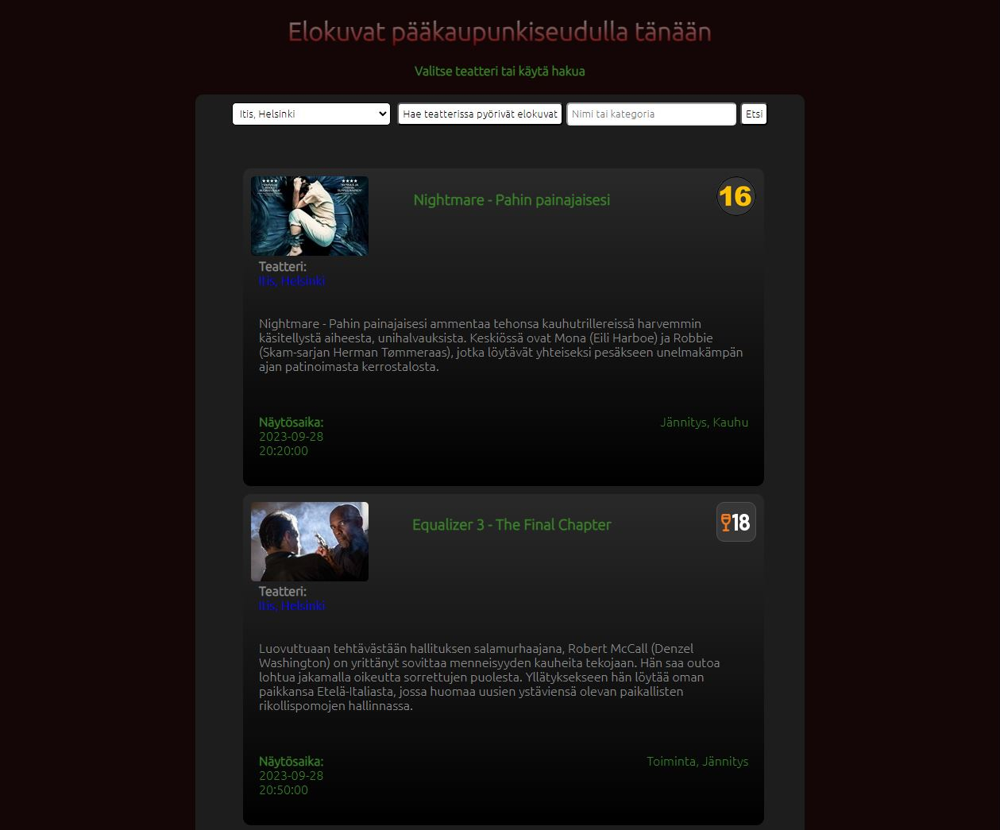
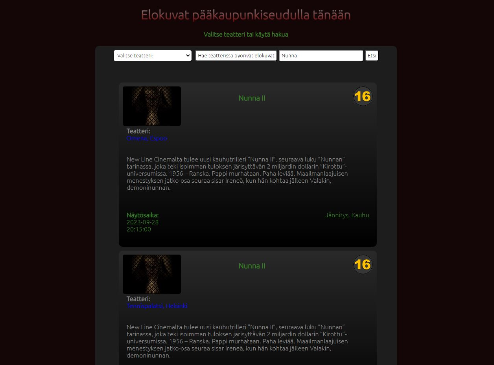

Elokuvat pääkaupunkiseudulla tänään
Projekti oli osa Web-sovellusten kehittäminen JavaScriptillä kurssia. Teimme parityönä verkkosivun, joka hakee tietoa XML- rajapinnasta. Valitsimme Finnkinon toteutukseen, koska ajattelimme, että siitä on hyötyä työkaluna ihmisille, jotka ovat menossa katsomaan elokuvaa hetken mielijohteesta. Sovelluksesta on helppo hakea nykyisestä hetkestä alkaen alkavat näytökset. Projektin toteutimme parikoodauksena.
Näytökset teatteri kohtaisesti listattuna (Kuva suurenee klikkaamalla)
Sovelluksella voi hakea näytökset teatteri kohtaisesti tai käyttämällä hakusanaa. Sovellus lajittelee tiedot joko elokuvan tai teatterin perusteella riippuen haku tavasta.
Näytökset haettuna hakusanalla (Kuva suurenee klikkaamalla)
Sovellus hakee näytösen esittelykuvan, nimen, ikärajan, elokuvan kuvauksen, näytösajan sekä genren. Elokuvan nimen ja Teatterin nimen kohdalle tulee linkki Finnkinon sivuille, jonka kautta pystyy varaamaan liput näytökseen.
Projektin aikana sai hyvää kokemusta XML- tiedonkäsittelystä sekä JavaScriptistä. Parikoodaus oli hyvin opettavaista, koska toinen pääsi katselemaan kun toinen koodaa ja vaihtelemaan erilaisia ajatuksia koodaamisesta sekä tiedonkäsittelystä. Vuorotellessa roolejen kanssa, pääsivät molemmat kokeilemaan eri rooleja, joka lisäsi luovuutta. Työtapana parikodaus on tehokasta, koska koodia katsotaan kaksin silmin ja katselija voi saada sellasia ideoita, joita ei välttämättä koodia kirjoittaessa tule. Pääsimme myös tutustumaan toistemme työtapoihin.
Sovellusta voit kokeilla täällä:
Elokuvat pääkaupunkiseudulla tänään
Linkki lähdekoodiin:
Lähdekoodi GitHubissa